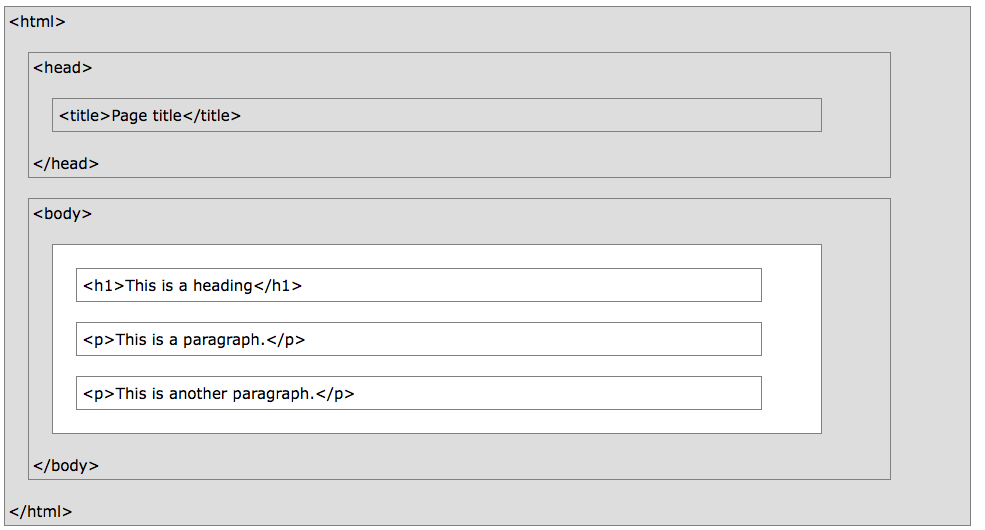

Az ellenőrző script a következő fájlokat fogja vizsgálni: exercise_01.html, exercise1.css
Valósítsd meg következő HTML struktúrát:

HTML5-ben legyen deklarálva.
title tag tartalmazza a neptun kódod.
h1 tagot css segítségével formázd pirosra. Használd a red osztályt.
p tag kpajon welcome osztályt, és legyen aláhúzva.
Ne felejts el HTML5-ben deklarálni az oldalt, és létrehozni a csontvázat!
Az ellenőrző script a következő fájlokat fogja vizsgálni: exercise_02.html
A következőket kell megvalósítanod:
p taget, ami egy www.elte.hu-ra mutató hiperhivatkozást tartalmazzon, és új ablakban nyíljon meg, és kapja meg az elte-link egyéni azonosítót!
elsokep egyeni azonosítóval, és a következő attribútumok mindegyikével: alt, title, width, height és használd a kép megjelítésre szolgáló html5 tageket is. Figyelj,
hogy az oldal valid maradjon HTML5 szerint.
Ne felejts el HTML5-ben deklarálni az oldalt, és létrehozni a csontvázat!
Az ellenőrző script a következő fájlokat fogja vizsgálni: exercise_03.html, exercise_3.css
A következőket kell megvalósítanod:
p bekezdést, ami kapja meg a balraigazit osztályt. Az exercise_3.css fájlban pedig definiáld ezt az osztályt úgy, hogy a szöveg balra igazítva jelenjen meg.
p bekezdést, ami kapja meg a jobbraigazit osztályt. Az exercise_3.css fájlban pedig definiáld ezt az osztályt úgy, hogy a szöveg jobbra igazítva jelenjen meg.
p bekezdést, ami kapja meg a kozepreigazit osztályt. Az exercise_3.css fájlban pedig definiáld ezt az osztályt úgy, hogy a szöveg középre igazítva jelenjen meg.
p bekezdést, ami kapja meg a sorkizart osztályt. Az exercise_3.css fájlban pedig definiáld ezt az osztályt úgy, hogy a szöveg sorkizártra igazítva jelenjen meg.
Ne felejts el HTML5-ben deklarálni az oldalt, és létrehozni a csontvázat!
Az ellenőrző script a következő fájlokat fogja vizsgálni: exercise_04.html, exercise_4.css
A következőket kell megvalósítanod:
p taget, ami kapja meg a custom-text css osztályt. Az exercise_4.css fájlban definiáld az osztyált, és kapjon a font-family definiált betűtpust, és általánis betűkészletet is.
p taget, ami kapja meg a vers css osztályt. Az exercis_4.css fájlban definiáld az osztályt úgy, hogy kapjon egy egyedi fontot, és írd ki ezzel a fonttal a lentebb található verset.
A vers:
Kis Lajos: Röviden a válaszokról S ahogy felnéztem rá kérdőn, megcsillant a Hold. Csillogása a te szemed csillogása volt.
Ne felejts el HTML5-ben deklarálni az oldalt, és létrehozni a csontvázat!
Az ellenőrző script a következő fájlokat fogja vizsgálni: exercise_05.html, exercise_5.css
A következőket kell megvalósítanod:
p taget, ami kapja meg a changed-fontsize-1 css osztályt. Az exercise_5.css fájlban defniált az osztályt úgy, hogy a megjelnített szöveg másfélszerese legyen az alapbeállításnál.
p taget, ami kapja meg a changed-fontsize-2 css osztályt. Az exercise_5.css fájlban defniált az osztályt úgy, hogy a megjelnített szöveg fele legyen az alapbeállításnál.
p taget, ami kapja meg a changed-fontsize-3 css osztályt. Az exercise_5.css fájlban defniált az osztályt úgy, hogy a megjelnített szöveg pontosan 12pt nagysású legyen.
p taget, ami kapja meg a changed-fontsize-4 css osztályt. Az exercise_5.css fájlban defniált az osztályt úgy, hogy a megjelnített szöveg pontosan 12px nagysűgú legyen.
changed-fontsize-N CSS osztályok kapják meg sorban a következő CSS attribútumoka is: dőlt, vastag, kispatilális, ritkított betűköz.
Ne felejts el HTML5-ben deklarálni az oldalt, és létrehozni a csontvázat!
Az ellenőrző script a következő fájlokat fogja vizsgálni: exercise_06.html, exercise_6.css
A következőket kell megvalósítanod:
div taget, ami kapja meg a continer css osztályt.
container divben definiálj egy p taget, ami kapja meg text css osztályt.
exercise_6.css fájlban definiáld ezt a két osztályt.
container osztály kapjon világos szürke hátteret, és maximalizáld a szélességét 900 pixelben.
container elem közé rakj be egy elválasztó vonalat.
Ne felejts el HTML5-ben deklarálni az oldalt, és létrehozni a csontvázat!
Az ellenőrző script a következő fájlokat fogja vizsgálni: exercise_06.html, exercise_6.css
A következőket kell megvalósítanod:
lista css osztályt.
szamozottlista osztályt.